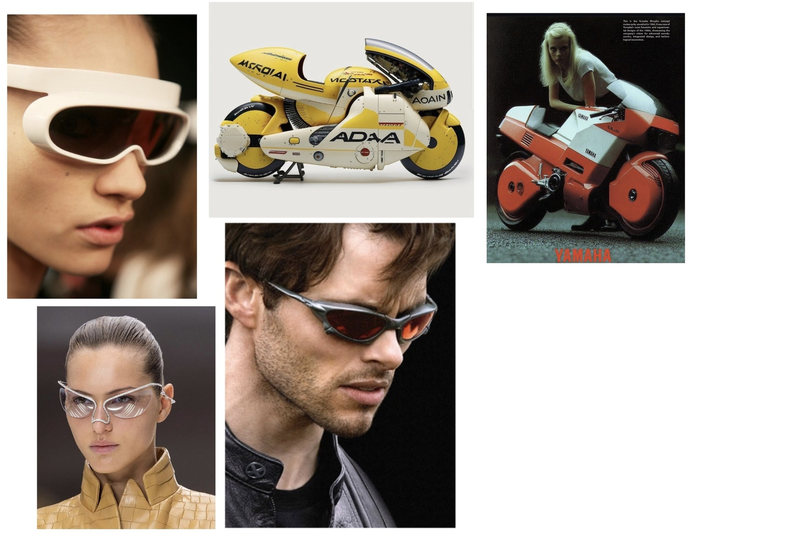
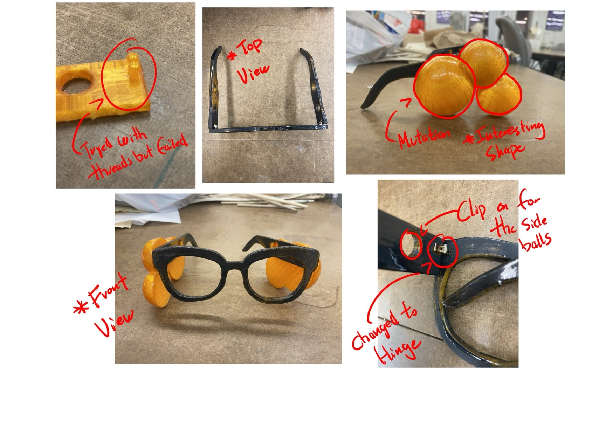
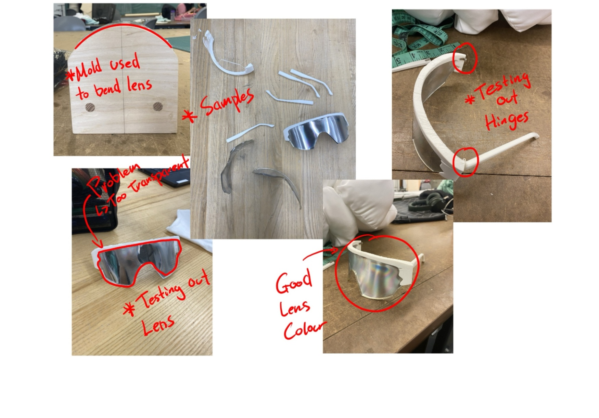

Design Idea

Graduating and entering adulthood is an uphill climb. Almost like a mountain. These glasses were made to help with that climb, not literally, but as an object that carries the intention of protection and clear vision for whatever comes next. They are a tool for becoming Kaneda rather than Tetsuo. To see clearly. To not be blinded by what is in front of you.
The form came directly from Kaneda's red bike, specifically the windshield. The visor shape of the lens references that same curve, that same forward-facing protection. Sports eyewear brands like Oakley provided functional direction, how to solve structural problems and how a visor sits on a face. But the starting point was always the bike.
The one-way mirror lens material was provided during the making process and immediately felt right. You can see out clearly. No one can see in. The wearer has full vision. The world sees only a reflection of itself. For a collection about navigating power and growth without losing yourself, that felt exactly correct.
Sketches

Process

The first prototype featured glasses with bubble-like shapes placed along the sides. The bubble design referenced Tetsuo's mutation and expansion in AKIRA, reflecting the theme of transformation. This iteration was designed as a clip-on, allowing the glasses to be customizable and adaptable.
Although visually interesting, the design revealed a major flaw. The added bubbles made the glasses front-heavy, creating an imbalance when worn. This affected comfort and stability, making the glasses more likely to slip off the wearer's face.

The second prototype explored a more sporty design, taking inspiration from the motorcycles ridden by biker gangs in AKIRA. Instead of a flat frame, a curved form was developed, referencing the shape of motorcycle windshields.
The lens was made using one-way reflective plastic, appearing mirrored from the outside while remaining clear from the inside. The lens shape was laser cut, then curved using a heat gun and a wooden mold to achieve the desired form.
This prototype also revealed issues with the frame curvature. Initially, the frame was printed using PLA filament, which lacked flexibility. The material was later changed to TPU filament, allowing the frame to flex slightly and enabling a more secure fit for the lens.
CAD Render

Final

The final design evolved into a sporty pair of sunglasses. All components were changed from PLA to TPU, improving flexibility and durability while reducing the risk of parts breaking or separating.
The lens was made from one-way mirror plastic, laser cut to shape and fitted precisely into the frame. The hinge was heat-pressed onto the TPU frame and arms, creating a strong bond capable of withstanding repeated wear and movement.